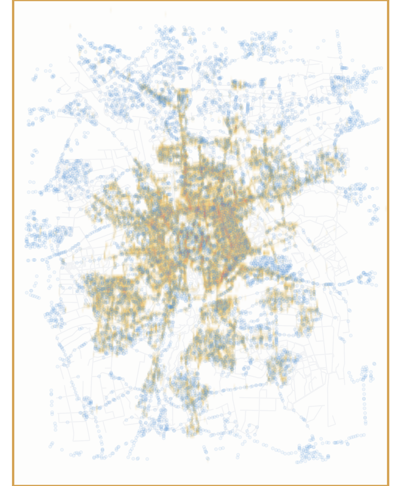
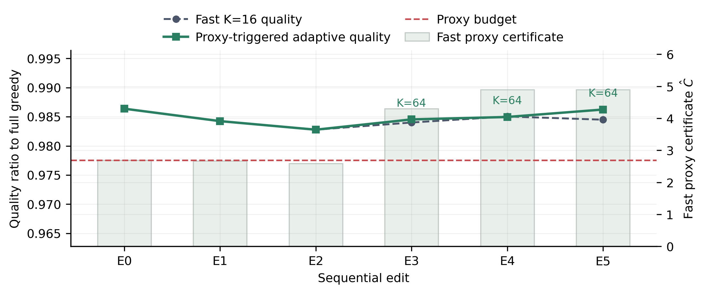

Record
Store the demand, candidates, policy settings and edit sequence as an explicit scenario.
ACM SIGSPATIAL 2026 · Research Track · Accepted / In Press
CLIPPER recomputes city-scale coverage plans after exclusions, locks, spacing rules or allocation caps change, while enforcing active hard constraints and recording every scenario for deterministic replay.
The planning problem
Municipal parking-zone planning is not a one-shot optimization task. Stakeholders repeatedly add exclusions, retain existing sites, tighten spacing or revise allocation rules. CLIPPER separates recorded scenarios, bounded candidate generation, exact feasibility checks and missed-gain auditing so alternatives can be compared quickly and reproduced later.
Execution contract
Store the demand, candidates, policy settings and edit sequence as an explicit scenario.
Construct bounded candidate pools from stable singleton-coverage rankings.
Evaluate current exact marginals and all active hard constraints before every insertion.
Use conservative online screening and reserve exact full-set scans for offline or high-stakes checks.
Re-run recorded inputs with deterministic ranking and tie rules to reproduce the plan fingerprint.
Braunschweig replay
The same demand and candidate support are replayed as the scenario introduces forbidden sites, mandatory locks and minimum spacing. Switch between the recorded stages to inspect the resulting spatial plan.

Quality monitoring
CLIPPER distinguishes fast online screening from exact offline auditing. The recorded edit chain shows that the shortlist can be expanded when the conservative proxy signals risk, while exact full-set checks remain available for high-stakes review.

Resources
Citation
Julian Teusch, Jörg P. Müller, and Monika Sester. CLIPPER: Replayable Shortlisted Optimization for Repeated Spatial Coverage Planning. 34th ACM SIGSPATIAL International Conference on Advances in Geographic Information Systems, 2026. In press.